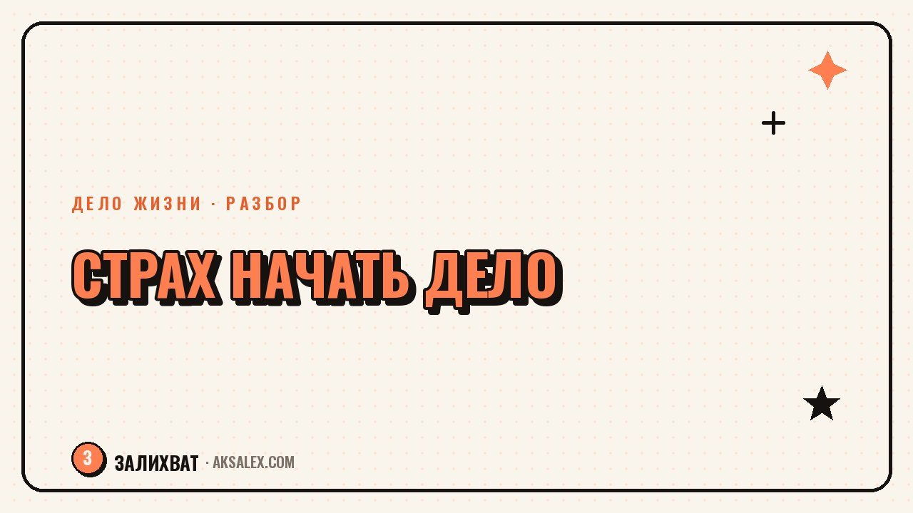

Страх начать своё дело: как сделать первый шаг

Страх начать своё дело редко звучит как страх - он маскируется под «ещё не готова», «сначала доучусь», «сейчас не время». Под этим обычно прячется одно: ты боишься потратить силы и остаться ни с чем. Это нормальная реакция, а не признак того, что идея плохая или ты не способна. Разберём, откуда растёт этот страх и как сделать первый шаг, даже когда внутри всё сопротивляется.
Откуда берётся страх начать своё дело
Чаще всего страх связан не с самим делом, а с тем, что оно значит для твоей идентичности. Если дело не получится, это будет восприниматься не как «эта попытка не сработала», а как «я не способна». Мозг заранее защищает тебя от такого удара по самооценке, и самый простой способ защиты - не начинать вовсе.
Второй источник - реальные риски: деньги, время, отношение близких, которые могут не поддержать затею. Эти риски часто существуют не в том масштабе, в каком их рисует воображение: провал редко выглядит как полная катастрофа, а чаще как неудачный заход, после которого можно скорректировать план и попробовать иначе.
Как отличить осторожность от страха, который держит на месте
- Осторожность предлагает конкретный план проверки идеи, страх предлагает только отложить
- Осторожность звучит как «давай проверим на малом», страх - как «а вдруг не получится вообще никогда»
- Осторожность снижается после действия, страх растёт тем сильнее, чем дольше откладываешь
Почему откладывать кажется безопасным, но это не так
Откладывание даёт иллюзию контроля: пока ты не начала, ничего не может провалиться. Но за это время дело не стоит на месте в твоей голове - оно обрастает всё более высокими ожиданиями, и первый шаг с каждой неделей кажется всё более рискованным, хотя по факту ничего не изменилось.
Есть и обратная сторона: чем дольше дело существует только в планах, тем больше оно давит чувством вины и упущенного времени. Получается парадокс - откладывание задумано как защита от боли, а на деле добавляет новую, постоянную боль от того, что ты так и не попробовала.
Дело не обязано сразу получиться. Оно обязано просто начаться - дальше можно поправить курс, но нельзя поправить то, чего не было.
Как сделать первый шаг, когда страшно
Первый шаг должен быть маленьким настолько, чтобы его было невозможно саботировать страхом. Не «запустить бизнес», а «написать текст с описанием услуги и показать трём знакомым». Не «уйти с работы и открыть своё», а «посчитать, сколько денег нужно на три месяца без зарплаты, и узнать, есть ли они у тебя сейчас».
Полезно заранее решить, что будет считаться успехом первого шага - не продажа и не идеальный результат, а сам факт действия. Если задача «написать и отправить», то отправленный текст - это уже выполненная задача, независимо от того, что ответят.
Шаги, которые снижают страх на практике
- Разбей дело на 5-7 маленьких шагов и начни с самого безопасного
- Проверь идею на минимальной версии - без вложений, на знакомых или в своём круге
- Назначь конкретную дату первого шага, а не «когда-нибудь созрею»
- Найди одного человека, с кем можно обсуждать прогресс - страх хуже переносится в одиночку
Что делать, если страх не проходит после первого шага
Страх редко исчезает после одного действия - чаще он просто немного снижается, а дальше возвращается перед следующим шагом. Это нормально: смелость не состояние без страха, а готовность действовать вместе с ним. Не нужно ждать момента, когда страх исчезнет совсем - такого момента может не быть никогда.
Если страх настолько силён, что мешает не только делу, но и повседневной жизни - постоянная тревога, бессонница, панические состояния - это уже вопрос не мотивации, а состояния психики, и здесь лучше обратиться к психологу, а не пытаться продавить всё силой воли.
Сравнение: что помогает двигаться, а что держит на месте
| Подход | Что происходит | Результат |
|---|---|---|
| Жду, пока страх пройдёт | Откладываю неделями и месяцами | Дело остаётся только в планах |
| Делаю маленький проверочный шаг | Страх есть, но действие уже произошло | Появляется реальная информация об идее |
| Жду идеальных условий | Условия никогда не становятся идеальными | Старт сдвигается бесконечно |
| Обсуждаю с кем-то прогресс | Страх делится на двоих, появляется поддержка | Легче сделать следующий шаг |
Частые вопросы
Как понять, что мешает начать - страх или реальные риски?
Реальный риск обычно можно описать конкретно и проверить фактами: сколько денег нужно, сколько времени есть в запасе. Страх чаще звучит размыто - «а вдруг не получится» - без конкретного сценария и без плана, как эту опасность проверить.
Что делать, если страх начать своё дело не проходит?
Страх редко исчезает полностью - он снижается после первых маленьких действий, но может возвращаться перед каждым новым шагом. Задача не ждать его исчезновения, а делать маленький проверочный шаг, даже если страх ещё есть.
С чего начать своё дело, если страшно уйти с основной работы?
Не обязательно увольняться сразу - можно проверить идею вечерами и выходными, без риска для основного дохода. Уходить стоит только тогда, когда дело уже даёт понятный результат, а не на старте.
Как справиться со страхом, что дело не получится?
Переформулируй цель первого шага: не «добиться успеха», а «проверить идею на маленьком масштабе». Тогда даже отрицательный ответ или слабый результат становится полезной информацией, а не провалом всего дела.
Нужно ли идти к психологу из-за страха начать своё дело?
Если страх держит в рамках обычной нерешительности, достаточно разбить дело на маленькие шаги и начать. Если же страх перерастает в постоянную тревогу, бессонницу или панические состояния, это повод обратиться к психологу.
Раз тема оказалась полезной, вот что почитать следующим. Как начать вести блог в Инстаграм: оформление, первые посты, Reels и нейросети для контента.
Читать статью →а не вручную